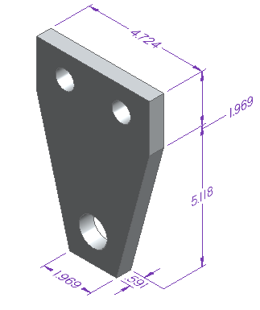
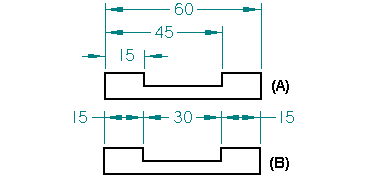
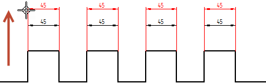
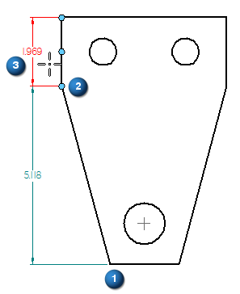
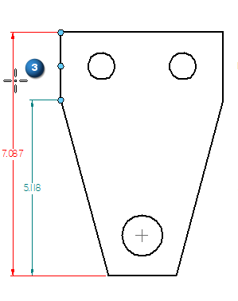

Distance Between command
Use the Distance Between command  to place a linear dimension that measures the distance between elements or key points
on a sketch, a drawing, or a model.
to place a linear dimension that measures the distance between elements or key points
on a sketch, a drawing, or a model.
Distance Between (2D)

Distance Between (3D)

You can place linear dimensions in stacked (A) or chained dimension groups (B). You can also add linear dimensions to existing linear dimension groups.

When placing a distance between dimension, you can create an alignment set. This makes it easier to edit them as a group and to rearrange them. For more information, see Working with dimension alignment sets.

Use the Dimension command bar to set options when placing new dimensions and modifying existing dimensions. Some options are available only when you have selected an element first. Other options may not be available with some dimension commands.
Dimensions placed on model geometry are PMI elements. For examples and additional information that are specific to placing dimensions on the model, see:
-
For 3D dimension value editing controls in the modeling environments, see Dimension value edit controls.
Distance Between workflow
When placing a distance between dimension:
-
The origin element is the first element or keypoint you click (1).
-
The measurement element is the element or keypoint you measure to (2).
-
The dimension orientation is determined by your cursor location. Move the cursor to find the one you want and click to place it (3).
Example:

-
(Optional) You can add another dimension to the dimension set by clicking another measure-to element or keypoint.
Note:If a message is displayed saying the dimension cannot be placed, then you can right-click to restart the command workflow.